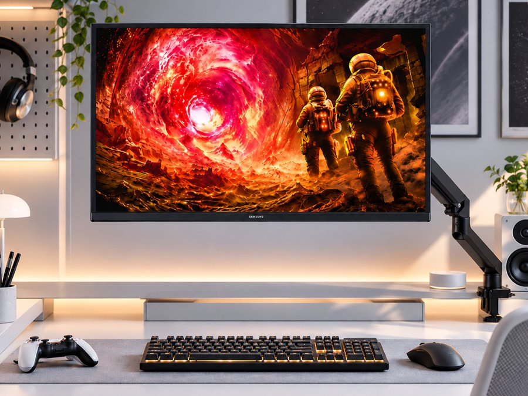
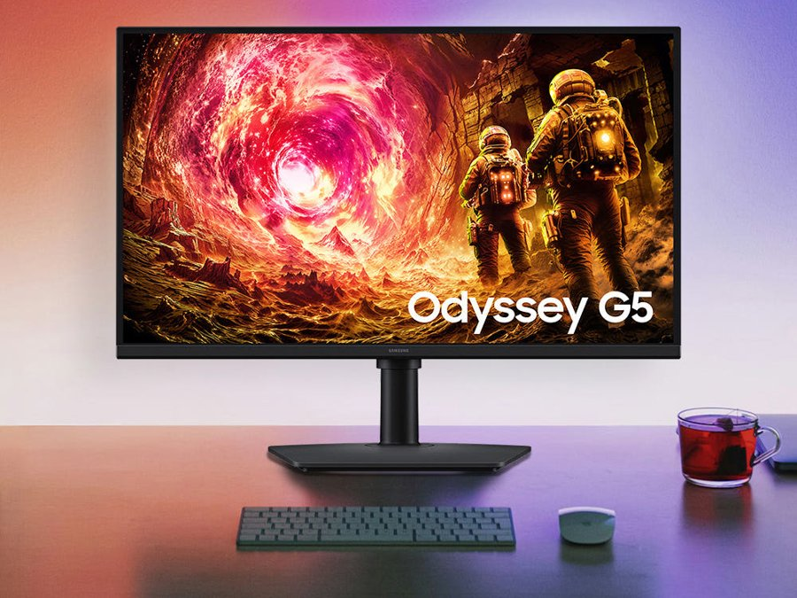
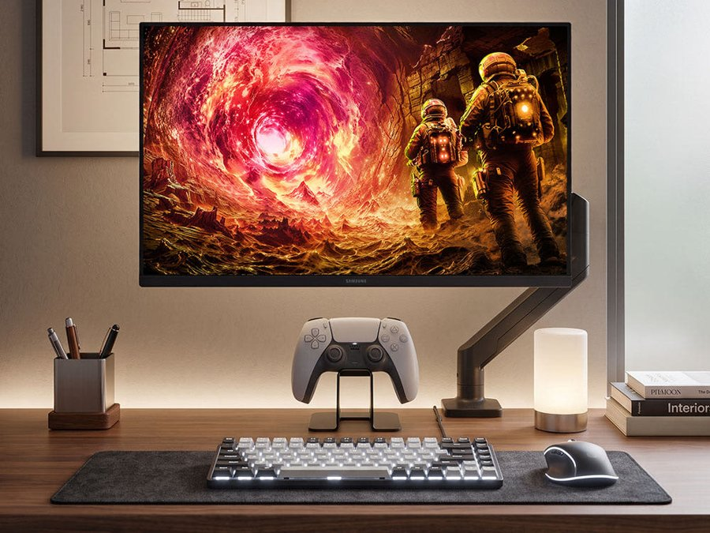
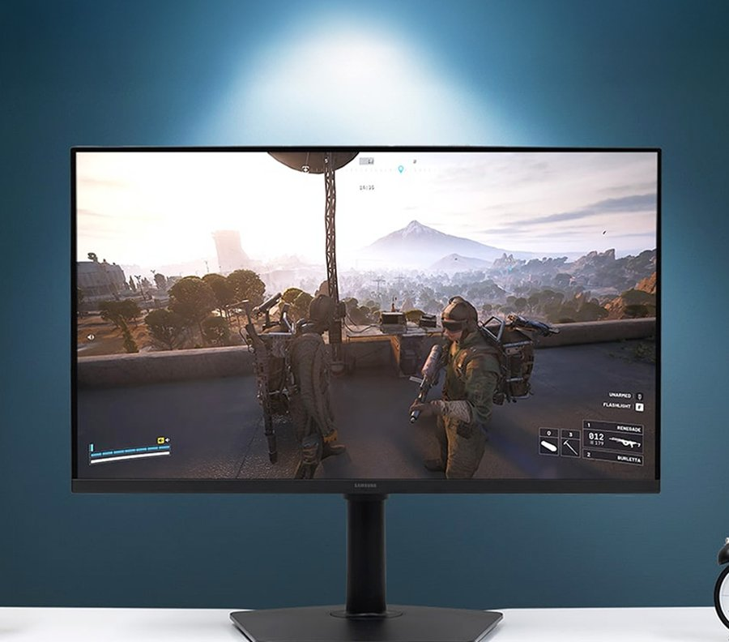
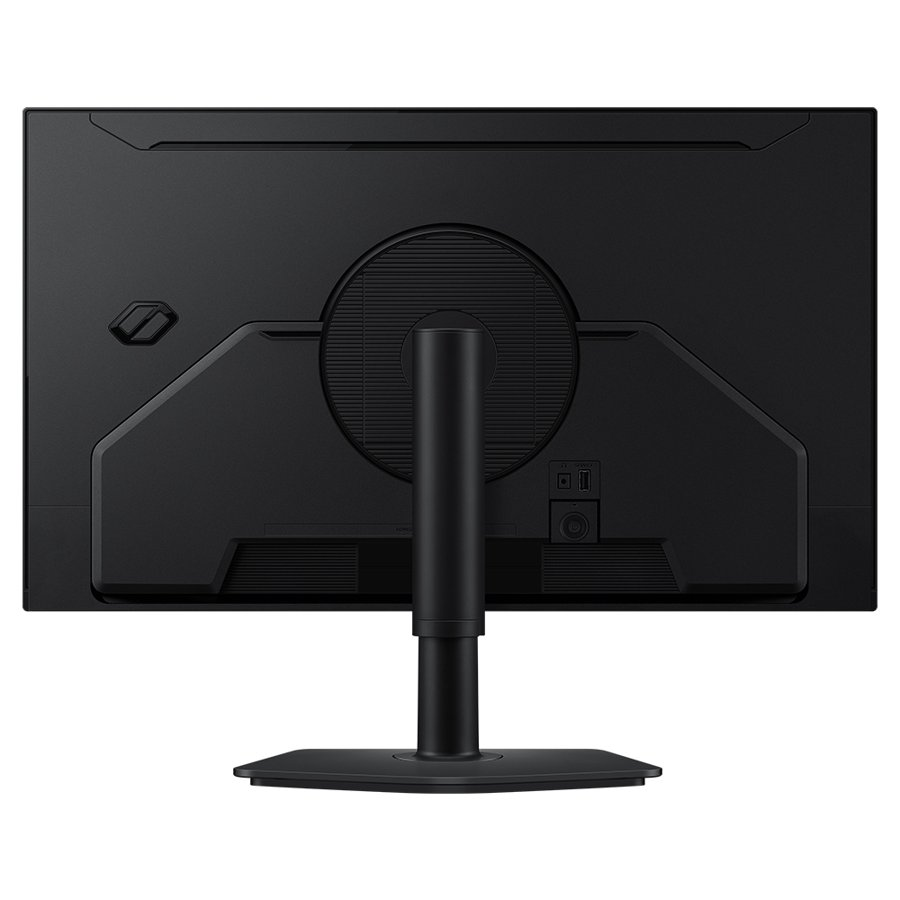

Samsung Odyssey G5 LS27FG500 Review: Overview
This Samsung Odyssey G5 LS27FG500 review looks at the 2025 Odyssey G5 G50F, a 27-inch QHD 180Hz IPS gaming monitor that Korean shoppers buy as a single screen for both games and work. In Korea it sells through Samsung official partner stores on Naver, where it is one of the most-searched mid-range monitors.
Choosing a monitor usually means trading refresh rate against resolution. The Odyssey G5 tries to cover both: a sharp 2560 x 1440 desk screen for documents and split windows, and a fast 180 Hz panel for shooters and racing games. We checked Samsung's official specification sheets and the Korean store listing, and looked at what matters on a real desk: viewing angles, connections, stand adjustment and value.
"QHD sharpness for work, 180 Hz smoothness for games and an IPS panel that keeps colours steady from the side — all in one 27-inch screen."

The Three Specs That Matter: IPS, QHD and 180 Hz
- Fast IPS panel: 178-degree viewing angles mean colours shift less when you lean back or someone watches from the side. Samsung quotes 99% sRGB coverage, good for photos and video.
- QHD 2560 x 1440: about 1.7 times the pixel density of Full HD on the same screen size, according to Samsung. Two documents side by side, plus a chat window, fit without feeling cramped.
- 180 Hz refresh, 1 ms (GtG): the difference shows in fast motion — sweeping the camera in an FPS or watching a racing game. For spreadsheets alone, layout and seating position matter more than refresh rate.
- HDR10 and adaptive sync: HDR10 signal support (at 300 nits typical, so think of it as entry-level HDR), AMD FreeSync and NVIDIA G-Sync Compatible.


Using It on a Korean Desk: Setup and Ergonomics
Korean apartments and officetel rooms often have shallow desks, so a 27-inch flat screen is a comfortable size. The stand adjusts for height (around 105 mm), tilt, swivel and pivot, and there is a 100 x 100 mm VESA mount; three of the official photos show it on a monitor arm, which frees up desk space for a keyboard and controller.
Connections are simple: one DisplayPort 1.2, one HDMI 2.0 and a headphone jack. There are no built-in speakers and no USB-C, so laptop users who want single-cable charging should look elsewhere. Samsung also includes gaming extras such as Black Equalizer (brightens dark scenes), Virtual AIM Point and Auto Source Switch+.


Key Specs
| Spec | Samsung Odyssey G5 G50F (LS27FG500) |
|---|---|
| Screen | 27-inch flat, 16:9 |
| Panel | IPS (Samsung "Fast IPS") |
| Resolution | QHD 2560 x 1440 |
| Refresh / response | Up to 180 Hz / 1 ms (GtG) |
| Brightness / contrast | 300 cd/m² typical / 1000:1 static |
| Colour | 99% sRGB, 16.7M colours, HDR10 |
| Adaptive sync | AMD FreeSync, NVIDIA G-Sync Compatible |
| Inputs | 1x DisplayPort 1.2, 1x HDMI 2.0, headphone out |
| Stand | Height ~105 mm, tilt, swivel, pivot; VESA 100 x 100 |
| Weight | 4.1 kg with stand, 2.9 kg without |
| Power | External adapter, 48 W max |
| Korean listing | Samsung official partner store on Naver, 323,000 KRW at time of writing |
Specifications are from Samsung's official product pages and specification sheets for the Odyssey G5 G50F and the Korean store listing; they were not lab-measured by us.
How It Compares
| Odyssey G5 G50F (27" QHD 180 Hz IPS) | Typical 27" FHD 165 Hz monitor | Typical 27" 4K 60 Hz monitor | |
|---|---|---|---|
| Sharpness for work | High (QHD) | Lower (FHD) | Highest (4K) |
| Motion for games | Very smooth (180 Hz) | Smooth (165 Hz) | Basic (60 Hz) |
| GPU demand | Medium | Low | High |
| Best for | Mixed gaming + work | Budget esports | Photo, video, text work |
Pros & Cons
| Pros | Cons |
|---|---|
| QHD + 180 Hz balance for games and work | Only one DisplayPort and one HDMI; no USB-C |
| IPS panel with wide viewing angles and 99% sRGB | 300-nit brightness makes HDR entry-level |
| Fully adjustable stand with pivot, plus VESA | No built-in speakers |
| FreeSync and G-Sync Compatible | HDMI 2.0 limits consoles below 180 Hz |
Who It Suits (and Who Should Skip It)
- Yes: PC gamers who also work or study at the same desk and want one screen for both.
- Yes: Players moving up from a Full HD monitor who want sharper text and smoother motion.
- Yes: Home offices that run several windows side by side.
- No: Laptop users who need USB-C single-cable charging and docking.
- No: HDR movie fans and creators who need high brightness or 4K detail.
Samsung Odyssey G5 LS27FG500 FAQ
What are the key specs of the Samsung Odyssey G5 LS27FG500?
According to Samsung's official specification sheet, the Odyssey G5 G50F (LS27FG500) is a 27-inch flat IPS monitor with QHD 2560 x 1440 resolution, up to 180 Hz refresh, 1 ms (GtG) response time, 300 nits typical brightness, 1000:1 static contrast, HDR10, 99% sRGB and 178-degree viewing angles.
Does it support G-Sync and FreeSync?
Yes. Samsung lists AMD FreeSync support and NVIDIA G-Sync Compatible certification, so variable refresh works with both modern AMD and NVIDIA graphics cards.
Can I reach 180 Hz at QHD over HDMI?
The monitor has one DisplayPort 1.2 and one HDMI 2.0 input. For the full 180 Hz at 2560 x 1440 on a PC, use the DisplayPort cable; consoles such as PS5 and Xbox Series X connect over HDMI and are limited by the console and HDMI 2.0 bandwidth (typically 120 Hz at 1440p). Refresh rate also depends on the source device.
Is the stand adjustable?
Yes. Samsung lists a height-adjustable stand (about 105 mm of travel) with tilt (-3 to 25 degrees), swivel (+/-45 degrees) and pivot to portrait mode. It also has a 100 x 100 mm VESA mount if you prefer a monitor arm, as in several of the official photos.
Is the Korean model the same as the U.S. Odyssey G5 G50F?
The Korean LS27FG500 and the U.S. LS27FG502 are both the 27-inch Odyssey G50F with the same QHD 180 Hz IPS panel family; the suffix mainly reflects regional packaging and power. The Korean Naver listing we reviewed (Samsung official partner store) was 323,000 KRW at the time of writing. Check the Amazon listing for current U.S. pricing.
Samsung Odyssey G5 G50F 27" QHD 180Hz IPS
Check current U.S. pricing for the 27-inch Odyssey G5 G50F on Amazon (the Korean LS27FG500 is sold via Samsung partner stores on Naver).